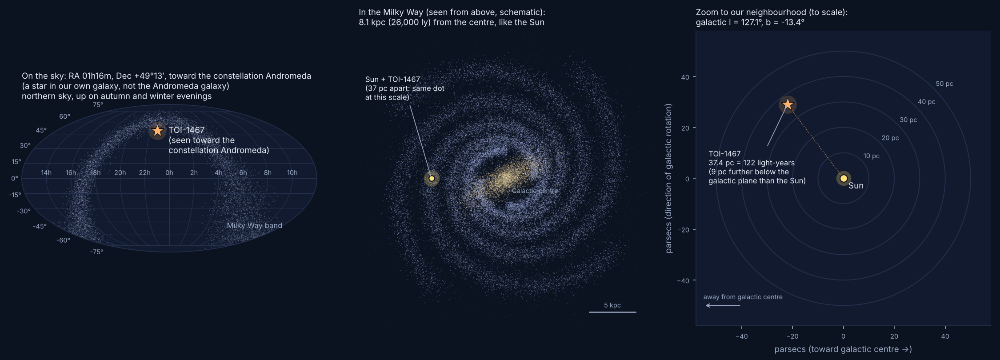

<title>TOI-1467 c</title>
<meta name="claude:viewport-fit-sides" content="cover">
<link rel="stylesheet" href="https://fonts.googleapis.com/css2?family=Space+Grotesk:wght@500;600&family=Inter:wght@400;500;600&family=JetBrains+Mono:wght@400;500&display=swap">
<style>
/* Layout: one narrow reading column; the animation is the hero; everything else follows as compact sections.
   Deliberately single-theme (night sky), all colours explicit. */
:root{
  --sky:#0b1220; --panel:#111a2e; --line:#24314d; --ink:#e8edf7; --muted:#9aa8c3;
  --star:#ffb36b; --c:#5fb0ff; --b:#c9a6ff; --data:#e8edf7; --good:#59d18a; --warn:#f2c14e;
  --display:"Space Grotesk",system-ui,sans-serif; --body:"Inter",system-ui,sans-serif; --mono:"JetBrains Mono",ui-monospace,monospace;
  color-scheme:dark;
}
body{background:var(--sky);color:var(--ink);font-family:var(--body);font-size:15px;line-height:1.55;
  padding-left:max(16px,env(safe-area-inset-left,0px));padding-right:max(16px,env(safe-area-inset-right,0px));padding-block:28px 48px}
main{max-width:1040px;margin:0 auto;display:grid;gap:36px}
h1,h2{font-family:var(--display);font-weight:600;text-wrap:balance;margin:0}
h1{font-size:clamp(28px,5vw,44px);letter-spacing:-.01em}
h2{font-size:21px}
p{margin:0;max-width:68ch}
.muted{color:var(--muted)}
.mono,td,.stat b{font-family:var(--mono);font-variant-numeric:tabular-nums}
header{display:grid;gap:12px}
.pill{display:inline-flex;align-items:center;gap:8px;width:max-content;font-size:12px;letter-spacing:.06em;text-transform:uppercase;
  border:1px solid var(--warn);color:var(--warn);border-radius:999px;padding:3px 10px}
.stats{display:flex;flex-wrap:wrap;gap:10px 28px;margin-top:4px}
.stat{display:grid}
.stat span{font-size:12px;color:var(--muted);letter-spacing:.04em;text-transform:uppercase}
.stat b{font-size:18px;font-weight:500}
.sim{background:var(--panel);border:1px solid var(--line);border-radius:10px;padding:14px;display:grid;gap:12px}
.grid{display:grid;grid-template-columns:1fr 1fr;gap:12px}
@media (max-width:760px){.grid{grid-template-columns:1fr}}
figure{margin:0;display:grid;gap:6px;min-width:0}
figcaption{font-size:12.5px;color:var(--muted)}
canvas{width:100%;height:auto;display:block;background:#070c17;border-radius:6px}
.controls{display:flex;flex-wrap:wrap;gap:10px 18px;align-items:center;font-size:13.5px}
button{font:inherit;background:var(--c);color:#06101f;border:0;border-radius:6px;padding:6px 14px;font-weight:600;cursor:pointer}
button:focus-visible,input:focus-visible{outline:2px solid var(--ink);outline-offset:2px}
label{display:inline-flex;gap:8px;align-items:center;color:var(--muted)}
.clock{font-family:var(--mono);color:var(--ink)}
ul.checks{list-style:none;padding:0;margin:0;display:grid;gap:8px}
ul.checks li{display:grid;grid-template-columns:22px 1fr;gap:8px;align-items:start}
ul.checks li::before{content:"✓";color:var(--good);font-weight:700}
ul.checks li.open::before{content:"…";color:var(--warn)}
.tablewrap{overflow-x:auto}
table{border-collapse:collapse;font-size:13.5px;min-width:520px}
th,td{text-align:left;padding:6px 12px 6px 0;border-bottom:1px solid var(--line)}
th{font-weight:500;color:var(--muted)}
a{color:var(--c)}
img.wide{border-radius:8px;background:#fff}
@media (prefers-reduced-motion:reduce){*{scroll-behavior:auto}}
</style>
<main>
<header>
  <span class="pill">Planet candidate · not confirmed</span>
  <h1>TOI-1467 c</h1>
  <p class="muted">A possible second, inner planet around TOI-1467, a red dwarf 122 light-years away in Andromeda. The star already has one confirmed planet, TOI-1467 b. The new signal is a 0.06% dip in the star's light every 3.154 days in NASA TESS data from 2019 to 2024.</p>
  <p class="muted">Found by Austin Claybrook in an independent search, first recorded about 23:00 UTC on 26 November 2026 (Thanksgiving; ~6 pm Eastern, ~3 pm Pacific). NASA's automated pipeline had also flagged the period as a threshold-crossing event, but it was never made a TESS candidate.</p>
  <div class="stats">
    <div class="stat"><span>Period</span><b>3.15413 d</b></div>
    <div class="stat"><span>Depth</span><b>609 ± 69 ppm</b></div>
    <div class="stat"><span>Radius</span><b>≈ 1.27 R⊕</b></div>
    <div class="stat"><span>Orbit</span><b>0.033 AU</b></div>
    <div class="stat"><span>Temperature</span><b>≈ 710 K</b></div>
    <div class="stat"><span>False-positive prob.</span><b>0.002</b></div>
  </div>
</header>

<section class="sim" aria-label="Animated model of the TOI-1467 system">
  <div class="grid">
    <figure><canvas id="top" width="520" height="420"></canvas>
      <figcaption>From above, to scale in AU. Earth is toward the bottom. The star is drawn to scale; the planets are enlarged ×12.</figcaption></figure>
    <figure><canvas id="face" width="520" height="420"></canvas>
      <figcaption>The star as seen from Earth, to scale. Each planet crosses the disk at its fitted impact parameter (c ≈ 0.73, b ≈ 0.65).</figcaption></figure>
  </div>
  <figure><canvas id="strip" width="1040" height="190"></canvas>
    <figcaption>Model brightness of the star over the last 4 days of simulated time. Planet c makes the small dips, planet b the larger ones. The dip shapes and sizes come from the fitted models.</figcaption></figure>
  <figure><canvas id="fold" width="1040" height="260"></canvas>
    <figcaption>The measured data: TESS light curve folded on c's 3.154-day period, 24 transits averaged in 10-minute bins (white), with the fitted model (blue). The marker shows where the animation is in c's orbit.</figcaption></figure>
  <div class="controls">
    <button id="play" type="button">Pause</button>
    <label for="speed">Speed <input id="speed" type="range" min="1" max="40" value="10"></label>
    <label for="warp"><input id="warp" type="checkbox" checked> Slow down during transits</label>
    <span class="clock" id="clock"></span>
  </div>
</section>

<section style="display:grid;gap:14px">
  <h2>Quick validation</h2>
  <ul class="checks">
    <li><span><b>Seen every year:</b> present in all four TESS 2-minute sectors (2019, 2022, 2024). Per-sector depths 399–711 ppm, consistent (p = 0.36).</span></li>
    <li><span><b>Every transit dips:</b> all 24 single transits have positive depth (χ² p = 0.78). Dropping any one leaves S/N ≥ 9.2.</span></li>
    <li><span><b>Found twice:</b> recovered by an independent method (TLS, S/N 9.7). NASA's pipeline also flagged it automatically (SPOC TCE 2, 513 ± 84 ppm), but it was never made a TESS candidate.</span></li>
    <li><span><b>Not an eclipsing binary:</b> odd and even transits match (1.1σ), there is no secondary eclipse, and the dip is box-shaped rather than wave-like (ΔBIC = 126).</span></li>
    <li><span><b>On this star:</b> the depth through 3, 15 or 30 pixels behaves exactly like the confirmed planet b's (1.20 / 1.00 / 0.97 vs 1.14 / 1.00 / 0.87).</span></li>
    <li><span><b>Not a hidden companion star:</b> 62 Keck radial velocities allow at most 3.9 m/s (&lt; 5.5 Earth masses). A companion star would give 20 km/s. A 2σ hint of 2.0 m/s matches a rocky planet.</span></li>
    <li><span><b>No close companions:</b> Keck adaptive-optics and Gemini speckle images show nothing within Δmag ≈ 7 at 0.5″.</span></li>
    <li><span><b>Not noise:</b> the same search on flipped light curves of 1,940 stars gave no false alarms at 1–10 days.</span></li>
    <li><span><b>False-positive probability 0.002</b> (TRICERATOPS with Keck imaging; the validation threshold is 0.015). The planet-on-target scenario has 97.6%.</span></li>
    <li class="open"><span><b>Still open:</b> two faint stars 16″ and 32″ away keep the nearby-false-positive probability at 0.002, against a required 0.001. One ground-based transit showing they don't dim by about 20% would close it. Next transits: 2026-12-01 09:56, 12-04 13:38, 12-07 17:20 UTC (±3 min).</span></li>
  </ul>
</section>

<section style="display:grid;gap:14px">
  <h2>Where it is</h2>
  <p class="muted">RA 01h16m27.5s, Dec +49°13′59″, in Andromeda. Galactic l = 127.1°, b = −13.4°. At 37.4 pc it is a close neighbour of the Sun, 8.1 kpc from the galactic centre like us. The star is an early M dwarf (Teff ≈ 3,830 K, 0.49 R☉, 0.49 M☉), about 30 times too faint to see by eye.</p>
  <div class="tablewrap"></div>
</section>

<section style="display:grid;gap:14px">
  <h2>Parameters</h2>
  <div class="tablewrap"><table>
    <tr><th>Quantity</th><th>TOI-1467 c (candidate)</th><th>TOI-1467 b (confirmed)</th></tr>
    <tr><td>Period (d)</td><td>3.1541320 ± 0.0000041</td><td>5.971136</td></tr>
    <tr><td>Mid-transit (BJD_TDB)</td><td>2459887.1638 ± 0.0011</td><td>2458766.989</td></tr>
    <tr><td>Depth (ppm)</td><td>609 ± 69</td><td>≈ 1330</td></tr>
    <tr><td>Duration (h)</td><td>1.18</td><td>1.55</td></tr>
    <tr><td>Radius (R⊕)</td><td>≈ 1.27</td><td>≈ 1.9</td></tr>
    <tr><td>Orbit radius (AU)</td><td>0.033</td><td>0.051</td></tr>
    <tr><td>Mass (M⊕)</td><td>&lt; 5.5 (2σ)</td><td>&lt; 9 (TKS)</td></tr>
  </table></div>
  <p class="muted">Full report: <a href="https://github.com/AClaybrook/candidate-exoplanets/tree/main/TOI-1467c" target="_blank" rel="noopener">github.com/AClaybrook/candidate-exoplanets</a>. Data: NASA TESS via MAST; follow-up imaging and RVs via ExoFOP and the TESS-Keck Survey.</p>
</section>
</main>

<script>
const D={"c":{"P":3.154132,"k":0.023529478609530717,"b":0.73,"ar":14.5,"data_h":[-4.915,-4.748,-4.581,-4.415,-4.248,-4.081,-3.914,-3.747,-3.58,-3.414,-3.247,-3.081,-2.913,-2.748,-2.581,-2.414,-2.247,-2.081,-1.914,-1.747,-1.581,-1.414,-1.247,-1.081,-0.914,-0.748,-0.581,-0.414,-0.247,-0.081,0.086,0.253,0.419,0.586,0.753,0.919,1.086,1.252,1.419,1.586,1.753,1.919,2.087,2.252,2.418,2.586,2.753,2.919,3.086,3.252,3.42,3.586,3.752,3.919,4.086,4.252,4.419,4.586,4.753,4.918],"data_ppm":[140.6,-12.3,118.0,9.5,31.3,-6.4,28.1,-5.5,118.2,-52.0,170.4,74.2,102.2,-130.3,68.7,49.4,-28.6,-50.1,67.7,73.2,128.8,-363.3,-10.2,-11.1,-122.9,1.2,-191.5,-551.4,-545.7,-502.7,-651.3,-594.5,-513.7,12.7,25.3,5.9,213.8,-449.1,202.4,45.7,50.4,186.5,19.1,12.7,181.3,-111.3,-219.6,78.1,137.9,-91.9,93.8,-19.1,-24.7,203.9,145.6,303.5,92.2,-54.0,-57.7,274.9],"model_h":[-5.0,-4.975,-4.95,-4.925,-4.9,-4.875,-4.85,-4.825,-4.8,-4.775,-4.75,-4.725,-4.7,-4.675,-4.65,-4.625,-4.6,-4.575,-4.55,-4.525,-4.5,-4.475,-4.45,-4.425,-4.4,-4.375,-4.35,-4.325,-4.3,-4.275,-4.25,-4.225,-4.2,-4.175,-4.15,-4.125,-4.1,-4.075,-4.05,-4.025,-4.0,-3.975,-3.95,-3.925,-3.9,-3.875,-3.85,-3.825,-3.8,-3.775,-3.75,-3.725,-3.7,-3.675,-3.65,-3.625,-3.6,-3.575,-3.55,-3.525,-3.5,-3.475,-3.45,-3.425,-3.4,-3.375,-3.35,-3.325,-3.3,-3.275,-3.25,-3.225,-3.2,-3.175,-3.15,-3.125,-3.1,-3.075,-3.05,-3.025,-3.0,-2.975,-2.95,-2.925,-2.9,-2.875,-2.85,-2.825,-2.8,-2.775,-2.75,-2.725,-2.7,-2.675,-2.65,-2.625,-2.6,-2.575,-2.55,-2.525,-2.5,-2.475,-2.45,-2.425,-2.4,-2.375,-2.35,-2.325,-2.3,-2.275,-2.25,-2.225,-2.2,-2.175,-2.15,-2.125,-2.1,-2.075,-2.05,-2.025,-2.0,-1.975,-1.95,-1.925,-1.9,-1.875,-1.85,-1.825,-1.8,-1.775,-1.75,-1.725,-1.7,-1.675,-1.65,-1.625,-1.6,-1.575,-1.55,-1.525,-1.5,-1.475,-1.45,-1.425,-1.4,-1.375,-1.35,-1.325,-1.3,-1.275,-1.25,-1.225,-1.2,-1.175,-1.15,-1.125,-1.1,-1.075,-1.05,-1.025,-1.0,-0.975,-0.95,-0.925,-0.9,-0.875,-0.85,-0.825,-0.8,-0.775,-0.75,-0.725,-0.7,-0.675,-0.65,-0.625,-0.6,-0.575,-0.55,-0.525,-0.5,-0.475,-0.45,-0.425,-0.4,-0.375,-0.35,-0.325,-0.3,-0.275,-0.25,-0.225,-0.2,-0.175,-0.15,-0.125,-0.1,-0.075,-0.05,-0.025,0.0,0.025,0.05,0.075,0.1,0.125,0.15,0.175,0.2,0.225,0.25,0.275,0.3,0.325,0.35,0.375,0.4,0.425,0.45,0.475,0.5,0.525,0.55,0.575,0.6,0.625,0.65,0.675,0.7,0.725,0.75,0.775,0.8,0.825,0.85,0.875,0.9,0.925,0.95,0.975,1.0,1.025,1.05,1.075,1.1,1.125,1.15,1.175,1.2,1.225,1.25,1.275,1.3,1.325,1.35,1.375,1.4,1.425,1.45,1.475,1.5,1.525,1.55,1.575,1.6,1.625,1.65,1.675,1.7,1.725,1.75,1.775,1.8,1.825,1.85,1.875,1.9,1.925,1.95,1.975,2.0,2.025,2.05,2.075,2.1,2.125,2.15,2.175,2.2,2.225,2.25,2.275,2.3,2.325,2.35,2.375,2.4,2.425,2.45,2.475,2.5,2.525,2.55,2.575,2.6,2.625,2.65,2.675,2.7,2.725,2.75,2.775,2.8,2.825,2.85,2.875,2.9,2.925,2.95,2.975,3.0,3.025,3.05,3.075,3.1,3.125,3.15,3.175,3.2,3.225,3.25,3.275,3.3,3.325,3.35,3.375,3.4,3.425,3.45,3.475,3.5,3.525,3.55,3.575,3.6,3.625,3.65,3.675,3.7,3.725,3.75,3.775,3.8,3.825,3.85,3.875,3.9,3.925,3.95,3.975,4.0,4.025,4.05,4.075,4.1,4.125,4.15,4.175,4.2,4.225,4.25,4.275,4.3,4.325,4.35,4.375,4.4,4.425,4.45,4.475,4.5,4.525,4.55,4.575,4.6,4.625,4.65,4.675,4.7,4.725,4.75,4.775,4.8,4.825,4.85,4.875,4.9,4.925,4.95,4.975,5.0],"model_ppm":[0.0,0.0,0.0,0.0,0.0,0.0,0.0,0.0,0.0,0.0,0.0,0.0,0.0,0.0,0.0,0.0,0.0,0.0,0.0,0.0,0.0,0.0,0.0,0.0,0.0,0.0,0.0,0.0,0.0,0.0,0.0,0.0,0.0,0.0,0.0,0.0,0.0,0.0,0.0,0.0,0.0,0.0,0.0,0.0,0.0,0.0,0.0,0.0,0.0,0.0,0.0,0.0,0.0,0.0,0.0,0.0,0.0,0.0,0.0,0.0,0.0,0.0,0.0,0.0,0.0,0.0,0.0,0.0,0.0,0.0,0.0,0.0,0.0,0.0,0.0,0.0,0.0,0.0,0.0,0.0,0.0,0.0,0.0,0.0,0.0,0.0,0.0,0.0,0.0,0.0,0.0,0.0,0.0,0.0,0.0,0.0,0.0,0.0,0.0,0.0,0.0,0.0,0.0,0.0,0.0,0.0,0.0,0.0,0.0,0.0,0.0,0.0,0.0,0.0,0.0,0.0,0.0,0.0,0.0,0.0,0.0,0.0,0.0,0.0,0.0,0.0,0.0,0.0,0.0,0.0,0.0,0.0,0.0,0.0,0.0,0.0,0.0,0.0,0.0,0.0,0.0,0.0,0.0,0.0,0.0,0.0,0.0,0.0,0.0,0.0,0.0,0.0,0.0,0.0,0.0,0.0,0.0,0.0,0.0,0.0,0.0,0.0,0.0,0.0,0.0,0.0,0.0,0.0,0.0,0.0,0.0,0.0,0.0,0.0,0.0,0.0,0.0,-118.4,-317.1,-400.2,-430.5,-453.1,-471.2,-486.2,-498.9,-509.8,-519.2,-527.4,-534.5,-540.7,-546.2,-550.9,-555.0,-558.5,-561.4,-563.9,-565.8,-567.4,-568.4,-569.1,-569.3,-569.1,-568.4,-567.4,-565.8,-563.9,-561.4,-558.5,-555.0,-550.9,-546.2,-540.7,-534.5,-527.4,-519.2,-509.8,-498.9,-486.2,-471.2,-453.1,-430.5,-400.2,-317.1,-118.4,0.0,0.0,0.0,0.0,0.0,0.0,0.0,0.0,0.0,0.0,0.0,0.0,0.0,0.0,0.0,0.0,0.0,0.0,0.0,0.0,0.0,0.0,0.0,0.0,0.0,0.0,0.0,0.0,0.0,0.0,0.0,0.0,0.0,0.0,0.0,0.0,0.0,0.0,0.0,0.0,0.0,0.0,0.0,0.0,0.0,0.0,0.0,0.0,0.0,0.0,0.0,0.0,0.0,0.0,0.0,0.0,0.0,0.0,0.0,0.0,0.0,0.0,0.0,0.0,0.0,0.0,0.0,0.0,0.0,0.0,0.0,0.0,0.0,0.0,0.0,0.0,0.0,0.0,0.0,0.0,0.0,0.0,0.0,0.0,0.0,0.0,0.0,0.0,0.0,0.0,0.0,0.0,0.0,0.0,0.0,0.0,0.0,0.0,0.0,0.0,0.0,0.0,0.0,0.0,0.0,0.0,0.0,0.0,0.0,0.0,0.0,0.0,0.0,0.0,0.0,0.0,0.0,0.0,0.0,0.0,0.0,0.0,0.0,0.0,0.0,0.0,0.0,0.0,0.0,0.0,0.0,0.0,0.0,0.0,0.0,0.0,0.0,0.0,0.0,0.0,0.0,0.0,0.0,0.0,0.0,0.0,0.0,0.0,0.0,0.0,0.0,0.0,0.0,0.0,0.0,0.0,0.0,0.0,0.0,0.0,0.0,0.0,0.0,0.0,0.0,0.0,0.0,0.0,0.0,0.0,0.0,0.0,0.0,0.0,0.0,0.0,0.0]},"b":{"P":5.971136,"k":0.03477198454346414,"b":0.65,"ar":22.2,"data_h":[-4.899,-4.698,-4.498,-4.298,-4.098,-3.898,-3.698,-3.498,-3.299,-3.098,-2.898,-2.698,-2.498,-2.298,-2.098,-1.898,-1.698,-1.499,-1.296,-1.098,-0.897,-0.698,-0.498,-0.298,-0.098,0.102,0.303,0.502,0.702,0.9,1.102,1.302,1.502,1.702,1.903,2.102,2.3,2.502,2.704,2.902,3.099,3.3,3.5,3.7,3.9,4.1,4.3,4.5,4.7,4.9],"data_ppm":[182.6,-194.4,190.1,35.0,295.2,173.4,426.1,-32.3,293.8,-17.1,124.1,-41.5,116.1,147.5,81.0,-72.5,210.2,115.6,-298.0,12.8,-190.0,-582.5,-868.1,-1513.9,-1314.6,-1345.8,-1343.3,-1143.8,-1113.9,210.7,-131.9,168.8,174.3,104.4,-82.0,-25.4,-51.6,-119.2,-185.1,-167.8,-229.0,-205.9,77.4,288.4,213.7,66.0,-0.8,-176.6,162.6,-152.1],"model_h":[-5.0,-4.975,-4.95,-4.925,-4.9,-4.875,-4.85,-4.825,-4.8,-4.775,-4.75,-4.725,-4.7,-4.675,-4.65,-4.625,-4.6,-4.575,-4.55,-4.525,-4.5,-4.475,-4.45,-4.425,-4.4,-4.375,-4.35,-4.325,-4.3,-4.275,-4.25,-4.225,-4.2,-4.175,-4.15,-4.125,-4.1,-4.075,-4.05,-4.025,-4.0,-3.975,-3.95,-3.925,-3.9,-3.875,-3.85,-3.825,-3.8,-3.775,-3.75,-3.725,-3.7,-3.675,-3.65,-3.625,-3.6,-3.575,-3.55,-3.525,-3.5,-3.475,-3.45,-3.425,-3.4,-3.375,-3.35,-3.325,-3.3,-3.275,-3.25,-3.225,-3.2,-3.175,-3.15,-3.125,-3.1,-3.075,-3.05,-3.025,-3.0,-2.975,-2.95,-2.925,-2.9,-2.875,-2.85,-2.825,-2.8,-2.775,-2.75,-2.725,-2.7,-2.675,-2.65,-2.625,-2.6,-2.575,-2.55,-2.525,-2.5,-2.475,-2.45,-2.425,-2.4,-2.375,-2.35,-2.325,-2.3,-2.275,-2.25,-2.225,-2.2,-2.175,-2.15,-2.125,-2.1,-2.075,-2.05,-2.025,-2.0,-1.975,-1.95,-1.925,-1.9,-1.875,-1.85,-1.825,-1.8,-1.775,-1.75,-1.725,-1.7,-1.675,-1.65,-1.625,-1.6,-1.575,-1.55,-1.525,-1.5,-1.475,-1.45,-1.425,-1.4,-1.375,-1.35,-1.325,-1.3,-1.275,-1.25,-1.225,-1.2,-1.175,-1.15,-1.125,-1.1,-1.075,-1.05,-1.025,-1.0,-0.975,-0.95,-0.925,-0.9,-0.875,-0.85,-0.825,-0.8,-0.775,-0.75,-0.725,-0.7,-0.675,-0.65,-0.625,-0.6,-0.575,-0.55,-0.525,-0.5,-0.475,-0.45,-0.425,-0.4,-0.375,-0.35,-0.325,-0.3,-0.275,-0.25,-0.225,-0.2,-0.175,-0.15,-0.125,-0.1,-0.075,-0.05,-0.025,0.0,0.025,0.05,0.075,0.1,0.125,0.15,0.175,0.2,0.225,0.25,0.275,0.3,0.325,0.35,0.375,0.4,0.425,0.45,0.475,0.5,0.525,0.55,0.575,0.6,0.625,0.65,0.675,0.7,0.725,0.75,0.775,0.8,0.825,0.85,0.875,0.9,0.925,0.95,0.975,1.0,1.025,1.05,1.075,1.1,1.125,1.15,1.175,1.2,1.225,1.25,1.275,1.3,1.325,1.35,1.375,1.4,1.425,1.45,1.475,1.5,1.525,1.55,1.575,1.6,1.625,1.65,1.675,1.7,1.725,1.75,1.775,1.8,1.825,1.85,1.875,1.9,1.925,1.95,1.975,2.0,2.025,2.05,2.075,2.1,2.125,2.15,2.175,2.2,2.225,2.25,2.275,2.3,2.325,2.35,2.375,2.4,2.425,2.45,2.475,2.5,2.525,2.55,2.575,2.6,2.625,2.65,2.675,2.7,2.725,2.75,2.775,2.8,2.825,2.85,2.875,2.9,2.925,2.95,2.975,3.0,3.025,3.05,3.075,3.1,3.125,3.15,3.175,3.2,3.225,3.25,3.275,3.3,3.325,3.35,3.375,3.4,3.425,3.45,3.475,3.5,3.525,3.55,3.575,3.6,3.625,3.65,3.675,3.7,3.725,3.75,3.775,3.8,3.825,3.85,3.875,3.9,3.925,3.95,3.975,4.0,4.025,4.05,4.075,4.1,4.125,4.15,4.175,4.2,4.225,4.25,4.275,4.3,4.325,4.35,4.375,4.4,4.425,4.45,4.475,4.5,4.525,4.55,4.575,4.6,4.625,4.65,4.675,4.7,4.725,4.75,4.775,4.8,4.825,4.85,4.875,4.9,4.925,4.95,4.975,5.0],"model_ppm":[0.0,0.0,0.0,0.0,0.0,0.0,0.0,0.0,0.0,0.0,0.0,0.0,0.0,0.0,0.0,0.0,0.0,0.0,0.0,0.0,0.0,0.0,0.0,0.0,0.0,0.0,0.0,0.0,0.0,0.0,0.0,0.0,0.0,0.0,0.0,0.0,0.0,0.0,0.0,0.0,0.0,0.0,0.0,0.0,0.0,0.0,0.0,0.0,0.0,0.0,0.0,0.0,0.0,0.0,0.0,0.0,0.0,0.0,0.0,0.0,0.0,0.0,0.0,0.0,0.0,0.0,0.0,0.0,0.0,0.0,0.0,0.0,0.0,0.0,0.0,0.0,0.0,0.0,0.0,0.0,0.0,0.0,0.0,0.0,0.0,0.0,0.0,0.0,0.0,0.0,0.0,0.0,0.0,0.0,0.0,0.0,0.0,0.0,0.0,0.0,0.0,0.0,0.0,0.0,0.0,0.0,0.0,0.0,0.0,0.0,0.0,0.0,0.0,0.0,0.0,0.0,0.0,0.0,0.0,0.0,0.0,0.0,0.0,0.0,0.0,0.0,0.0,0.0,0.0,0.0,0.0,0.0,0.0,0.0,0.0,0.0,0.0,0.0,0.0,0.0,0.0,0.0,0.0,0.0,0.0,0.0,0.0,0.0,0.0,0.0,0.0,0.0,0.0,0.0,0.0,0.0,0.0,0.0,0.0,0.0,0.0,0.0,0.0,0.0,0.0,0.0,0.0,-5.3,-180.4,-452.2,-731.4,-890.0,-948.8,-993.9,-1030.8,-1062.1,-1089.2,-1112.9,-1133.9,-1152.5,-1169.3,-1184.3,-1197.8,-1210.0,-1221.1,-1231.0,-1240.0,-1248.1,-1255.4,-1262.0,-1267.8,-1273.0,-1277.5,-1281.4,-1284.8,-1287.6,-1289.8,-1291.6,-1292.8,-1293.6,-1293.8,-1293.6,-1292.8,-1291.6,-1289.8,-1287.6,-1284.8,-1281.4,-1277.5,-1273.0,-1267.8,-1262.0,-1255.4,-1248.1,-1240.0,-1231.0,-1221.1,-1210.0,-1197.8,-1184.3,-1169.3,-1152.5,-1133.9,-1112.9,-1089.2,-1062.1,-1030.8,-993.9,-948.8,-890.0,-731.4,-452.2,-180.4,-5.3,0.0,0.0,0.0,0.0,0.0,0.0,0.0,0.0,0.0,0.0,0.0,0.0,0.0,0.0,0.0,0.0,0.0,0.0,0.0,0.0,0.0,0.0,0.0,0.0,0.0,0.0,0.0,0.0,0.0,0.0,0.0,0.0,0.0,0.0,0.0,0.0,0.0,0.0,0.0,0.0,0.0,0.0,0.0,0.0,0.0,0.0,0.0,0.0,0.0,0.0,0.0,0.0,0.0,0.0,0.0,0.0,0.0,0.0,0.0,0.0,0.0,0.0,0.0,0.0,0.0,0.0,0.0,0.0,0.0,0.0,0.0,0.0,0.0,0.0,0.0,0.0,0.0,0.0,0.0,0.0,0.0,0.0,0.0,0.0,0.0,0.0,0.0,0.0,0.0,0.0,0.0,0.0,0.0,0.0,0.0,0.0,0.0,0.0,0.0,0.0,0.0,0.0,0.0,0.0,0.0,0.0,0.0,0.0,0.0,0.0,0.0,0.0,0.0,0.0,0.0,0.0,0.0,0.0,0.0,0.0,0.0,0.0,0.0,0.0,0.0,0.0,0.0,0.0,0.0,0.0,0.0,0.0,0.0,0.0,0.0,0.0,0.0,0.0,0.0,0.0,0.0,0.0,0.0,0.0,0.0,0.0,0.0,0.0,0.0,0.0,0.0,0.0,0.0,0.0,0.0,0.0,0.0,0.0,0.0,0.0,0.0,0.0,0.0,0.0,0.0,0.0,0.0]}};
const Pc=3.154132, Pb=5.971136, PHASE_B0=0.59826; // b's orbital phase when c is at mid-transit (from the real epochs)
const AR=0.491*0.00465047; // stellar radius in AU
const A={c:0.0332,b:0.0507};
const COL={c:"#5fb0ff",b:"#c9a6ff",star:"#ffb36b",ink:"#e8edf7",muted:"#9aa8c3",line:"#24314d",data:"#e8edf7"};
function interp(xs,ys,x){if(x<=xs[0]||x>=xs[xs.length-1])return 0;let lo=0,hi=xs.length-1;while(hi-lo>1){const m=(lo+hi)>>1;if(xs[m]>x)hi=m;else lo=m;}const f=(x-xs[lo])/(xs[hi]-xs[lo]);return ys[lo]+f*(ys[hi]-ys[lo]);}
function hoursFromTransit(t,P,ph0){let ph=((t/P+ph0)%1+1)%1; if(ph>0.5)ph-=1; return ph*P*24;}
function fluxPpm(t){return interp(D.c.model_h,D.c.model_ppm,hoursFromTransit(t,Pc,0))+interp(D.b.model_h,D.b.model_ppm,hoursFromTransit(t,Pb,PHASE_B0));}
function setup(id){const c=document.getElementById(id);const r=window.devicePixelRatio||1;const w=c.width,h=c.height;c.width=w*r;c.height=h*r;const x=c.getContext("2d");x.scale(r,r);return {x,w,h};}
const topV=setup("top"),face=setup("face"),strip=setup("strip"),fold=setup("fold");
let t=-0.6, playing=!matchMedia("(prefers-reduced-motion: reduce)").matches, last=null, hist=[];
const btn=document.getElementById("play"); btn.textContent=playing?"Pause":"Play";
btn.onclick=()=>{playing=!playing;btn.textContent=playing?"Pause":"Play";};
function drawTop(){const {x,w,h}=topV;x.clearRect(0,0,w,h);const cx=w/2,cy=h/2-10,s=(h/2-30)/A.b;
  x.strokeStyle=COL.line;x.setLineDash([3,4]);for(const p of ["c","b"]){x.beginPath();x.arc(cx,cy,A[p]*s,0,7);x.stroke();}x.setLineDash([]);
  const g=x.createRadialGradient(cx,cy,0,cx,cy,AR*s*3);g.addColorStop(0,"#ffd9a8");g.addColorStop(.33,COL.star);g.addColorStop(1,"rgba(255,179,107,0)");
  x.fillStyle=g;x.beginPath();x.arc(cx,cy,AR*s*3,0,7);x.fill();
  for(const [p,P,ph0,rp] of [["c",Pc,0,1.27],["b",Pb,PHASE_B0,1.9]]){const th=2*Math.PI*(((t/P+ph0)%1+1)%1);
    const px=cx+A[p]*s*Math.sin(th),py=cy+A[p]*s*Math.cos(th);x.fillStyle=COL[p];x.beginPath();x.arc(px,py,Math.max(3,rp*6.371e6/1.496e11*s*12),0,7);x.fill();
    x.fillStyle=COL.muted;x.font="12px Inter,sans-serif";x.fillText(p,px+8,py-6);}
  x.strokeStyle=COL.muted;x.beginPath();x.moveTo(cx,h-6);x.lineTo(cx,h-26);x.stroke();x.beginPath();x.moveTo(cx-5,h-12);x.lineTo(cx,h-6);x.lineTo(cx+5,h-12);x.stroke();
  x.fillStyle=COL.muted;x.fillText("to Earth",cx+8,h-10);x.fillText("0.05 AU",14,22);x.strokeStyle=COL.muted;x.beginPath();x.moveTo(14,30);x.lineTo(14+0.05*s,30);x.stroke();}
function drawFace(){const {x,w,h}=face;x.clearRect(0,0,w,h);const cx=w/2,cy=h/2,R=Math.min(w,h)*0.36;
  for(let i=40;i>0;i--){const r=R*i/40,mu=Math.sqrt(1-(r/R)**2),I=1-0.36*(1-mu)-0.24*(1-mu)**2;x.fillStyle=`rgb(${255*I|0},${(160+40*I)*I|0},${(90+30*I)*I|0})`;x.beginPath();x.arc(cx,cy,r,0,7);x.fill();}
  for(const [p,P,ph0] of [["c",Pc,0],["b",Pb,PHASE_B0]]){const th=2*Math.PI*(((t/P+ph0)%1+1)%1);if(Math.cos(th)<=0)continue;
    const X=D[p].ar*Math.sin(th);if(Math.abs(X)>1.6)continue;x.fillStyle="#05070d";x.beginPath();x.arc(cx+X*R,cy-D[p].b*R,Math.max(1.8,D[p].k*R),0,7);x.fill();
    x.strokeStyle=COL[p];x.lineWidth=1;x.beginPath();x.arc(cx+X*R,cy-D[p].b*R,Math.max(1.8,D[p].k*R)+3,0,7);x.stroke();x.fillStyle=COL[p];x.font="12px Inter,sans-serif";x.fillText(p,cx+X*R+8,cy-D[p].b*R-8);}
  x.strokeStyle=COL.line;x.setLineDash([2,4]);for(const p of ["c","b"]){x.beginPath();x.moveTo(cx-R*1.25,cy-D[p].b*R);x.lineTo(cx+R*1.25,cy-D[p].b*R);x.stroke();}x.setLineDash([]);
  x.fillStyle=COL.muted;x.font="12px Inter,sans-serif";x.fillText("transit chords (dashed)",14,22);
  x.fillStyle=COL.ink;x.font="13px 'JetBrains Mono',monospace";x.fillText(`brightness ${(fluxPpm(t)).toFixed(0)} ppm`,14,h-14);}
function drawStrip(){const {x,w,h}=strip;x.clearRect(0,0,w,h);const L=50,Rm=12,T=14,B=28,span=4;const xs=v=>L+(v-(t-span))/span*(w-L-Rm),ys=v=>T+(v-200)/(-1500-200)*(h-T-B);
  x.strokeStyle=COL.line;x.fillStyle=COL.muted;x.font="11px 'JetBrains Mono',monospace";for(const v of [0,-500,-1000]){x.beginPath();x.moveTo(L,ys(v));x.lineTo(w-Rm,ys(v));x.stroke();x.fillText(v,6,ys(v)+4);}
  x.fillText("days",w-44,h-8);for(let d=Math.ceil(t-span);d<=t;d++){x.fillText(d.toFixed(0),xs(d)-4,h-8);}
  x.strokeStyle=COL.ink;x.lineWidth=1.5;x.beginPath();let first=true;for(let i=0;i<=600;i++){const tt=t-span+span*i/600;const X=xs(tt),Y=ys(fluxPpm(tt));if(first){x.moveTo(X,Y);first=false}else x.lineTo(X,Y);}x.stroke();
  x.fillStyle=COL.c;x.beginPath();x.arc(xs(t),ys(fluxPpm(t)),4,0,7);x.fill();x.fillStyle=COL.muted;x.fillText("ppm",6,10);}
function drawFold(){const {x,w,h}=fold;x.clearRect(0,0,w,h);const L=50,Rm=12,T=14,B=30,xs=v=>L+(v+5)/10*(w-L-Rm),ys=v=>T+(v-400)/(-1100-400)*(h-T-B);
  x.strokeStyle=COL.line;x.fillStyle=COL.muted;x.font="11px 'JetBrains Mono',monospace";for(const v of [0,-400,-800]){x.beginPath();x.moveTo(L,ys(v));x.lineTo(w-Rm,ys(v));x.stroke();x.fillText(v,6,ys(v)+4);}
  for(let hr=-4;hr<=4;hr+=2){x.fillText(hr+" h",xs(hr)-10,h-10);}
  x.fillStyle=COL.data;for(let i=0;i<D.c.data_h.length;i++){x.beginPath();x.arc(xs(D.c.data_h[i]),ys(D.c.data_ppm[i]),3,0,7);x.fill();}
  x.strokeStyle=COL.c;x.lineWidth=2;x.beginPath();D.c.model_h.forEach((v,i)=>{const X=xs(v),Y=ys(D.c.model_ppm[i]);i?x.lineTo(X,Y):x.moveTo(X,Y);});x.stroke();
  const hc=hoursFromTransit(t,Pc,0);const inside=Math.abs(hc)<5;x.strokeStyle=inside?COL.c:COL.line;x.lineWidth=1;x.setLineDash([4,3]);x.beginPath();x.moveTo(xs(Math.max(-5,Math.min(5,hc))),T);x.lineTo(xs(Math.max(-5,Math.min(5,hc))),h-B);x.stroke();x.setLineDash([]);
  x.fillStyle=COL.muted;x.fillText("ppm",6,10);x.fillText(Math.abs(hc)<0.6?"planet c is crossing the star":(inside?`c is ${Math.abs(hc).toFixed(1)} h ${hc<0?"before":"after"} mid-transit`:`next transit of c in ${((hc<0?-hc:Pc*24-hc)).toFixed(1)} h`),w-300,24);}
const clock=document.getElementById("clock");
function frame(ts){if(last===null)last=ts;const dt=Math.min(0.05,(ts-last)/1000);last=ts;
  if(playing){const sp=+document.getElementById("speed").value;let rate=sp*0.06; // days per second
    const hc=Math.abs(hoursFromTransit(t,Pc,0)),hb=Math.abs(hoursFromTransit(t,Pb,PHASE_B0));
    if(document.getElementById("warp").checked&&(hc<1.2||hb<1.4))rate*=0.06; t+=rate*dt;}
  drawTop();drawFace();drawStrip();drawFold();
  clock.textContent=`t = ${(t*24).toFixed(1)} h after a reference transit of c (${t.toFixed(2)} d)`;requestAnimationFrame(frame);}
requestAnimationFrame(frame);
</script>
